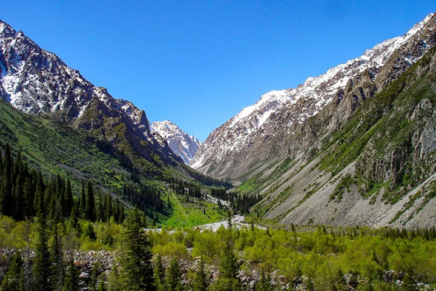

Ala Archa National Park is one of Central Asia's most spectacular natural reserves — just 40 km from Bishkek, yet an entirely different world. Alpine meadows, roaring rivers, glaciers, and peaks rising above 4,800 metres create a landscape that takes your breath away.
There are numerous hiking options in the park, from gentle strolls along the Ala-Archa valley floor to serious mountaineering approaches. You choose the level; we provide the perfect guide. In addition to mountains and rivers, discover the park's unique and rich fauna and flora.
Snow leopards, wolves, and golden eagles inhabit this park. While spotting the big cats is rare, the birdsong, wildflowers and mountain views are an experience unto themselves.
Fill out the form and we'll confirm within 24 hours